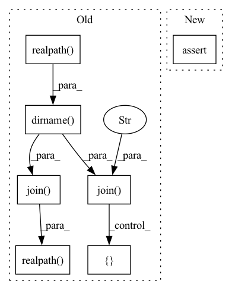

Pattern ID :15559
Before Change
def main():
experiment_dir = os.path.dirname( os.path.realpath( __file__))
hparams_file = os.path.join( experiment_dir, "hyperparams.yaml" )
data_folder = "../../../../samples/audio_samples/nn_training_samples"
data_folder = os.path.realpath( os.path.join( experiment_dir, data_folder))
with open(hparams_file) as fin:
hparams = sb.load_extended_yaml(fin, { "data_folder": data_folder} )
// Label encoder:
encoder = hparams["label_encoder"]After Change
ali_brain.evaluate(valid_data)
// Check if model overfits for integration test
assert ali_brain.train_loss < 350
if __name__ == "__main__":In pattern: SUPERPATTERN
Frequency: 3
Non-data size: 7
Instances Fragment ID: 52600155
Project Name: speechbrain/speechbrain
Commit Name: c9b83509f0a07e61ef75f23e359eec163c98ad12
Time: 2020-12-26
Author: mirco.ravabelli@gmail.com
File Name: recipes/minimal_examples/neural_networks/ASR_alignment_forward/example_asr_alignment_forward_experiment.py
M Class Name: AnonimousClass
N Class Name: AnonimousClass
M Method Name: main(0)
N Method Name: main(0)
M Parent Class:
N Parent Class:
M File Name: recipes/minimal_examples/neural_networks/ASR_alignment_forward/example_asr_alignment_forward_experiment.py
N File Name: recipes/minimal_examples/neural_networks/ASR_alignment_forward/example_asr_alignment_forward_experiment.py
M Start Line: 44
M End Line: 70
N Start Line: 100
N End Line: 126
Before Change
def main():
pytest.importorskip("numba")
experiment_dir = os.path.dirname( os.path.realpath( __file__))
hparams_file = os.path.join( experiment_dir, "hyperparams.yaml" )
data_folder = "../../../../samples/audio_samples/nn_training_samples"
data_folder = os.path.realpath( os.path.join( experiment_dir, data_folder))
with open(hparams_file) as fin:
hparams = sb.load_extended_yaml(fin, { "data_folder": data_folder} )
// Update label encoder:
label_encoder = hparams["label_encoder"]After Change
trasducer_brain.evaluate(valid_data)
// Check that model overfits for integration test
assert trasducer_brain.train_loss < 1.0
if __name__ == "__main__": Fragment ID: 52600156
Project Name: speechbrain/speechbrain
Commit Name: c9b83509f0a07e61ef75f23e359eec163c98ad12
Time: 2020-12-26
Author: mirco.ravabelli@gmail.com
File Name: recipes/minimal_examples/neural_networks/ASR_Transducer/example_asr_transducer_experiment.py
M Class Name: AnonimousClass
N Class Name: AnonimousClass
M Method Name: main(0)
N Method Name: main(0)
M Parent Class:
N Parent Class:
M File Name: recipes/minimal_examples/neural_networks/ASR_Transducer/example_asr_transducer_experiment.py
N File Name: recipes/minimal_examples/neural_networks/ASR_Transducer/example_asr_transducer_experiment.py
M Start Line: 70
M End Line: 100
N Start Line: 136
N End Line: 164
Before Change
def main():
experiment_dir = os.path.dirname( os.path.realpath( __file__))
hparams_file = os.path.join( experiment_dir, "hyperparams.yaml" )
data_folder = "../../../../samples/audio_samples/nn_training_samples"
data_folder = os.path.realpath( os.path.join( experiment_dir, data_folder))
with open(hparams_file) as fin:
hparams = sb.load_extended_yaml(fin, { "data_folder": data_folder} )
// Label encoder:
encoder = hparams["label_encoder"]After Change
ali_brain.evaluate(valid_data)
// Check if model overfits for integration test
assert ali_brain.train_loss < 2.0
if __name__ == "__main__": Fragment ID: 52600157
Project Name: speechbrain/speechbrain
Commit Name: c9b83509f0a07e61ef75f23e359eec163c98ad12
Time: 2020-12-26
Author: mirco.ravabelli@gmail.com
File Name: recipes/minimal_examples/neural_networks/ASR_alignment_viterbi/example_asr_alignment_viterbi_experiment.py
M Class Name: AnonimousClass
N Class Name: AnonimousClass
M Method Name: main(0)
N Method Name: main(0)
M Parent Class:
N Parent Class:
M File Name: recipes/minimal_examples/neural_networks/ASR_alignment_viterbi/example_asr_alignment_viterbi_experiment.py
N File Name: recipes/minimal_examples/neural_networks/ASR_alignment_viterbi/example_asr_alignment_viterbi_experiment.py
M Start Line: 46
M End Line: 72
N Start Line: 106
N End Line: 132